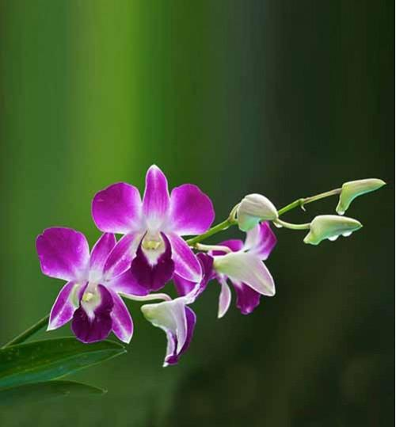
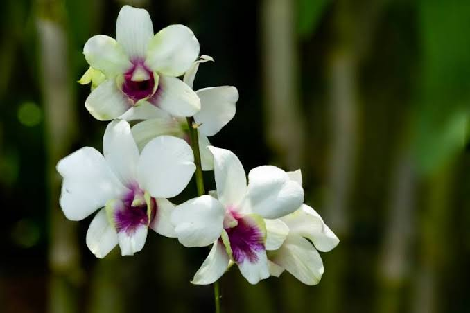
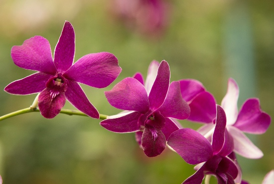
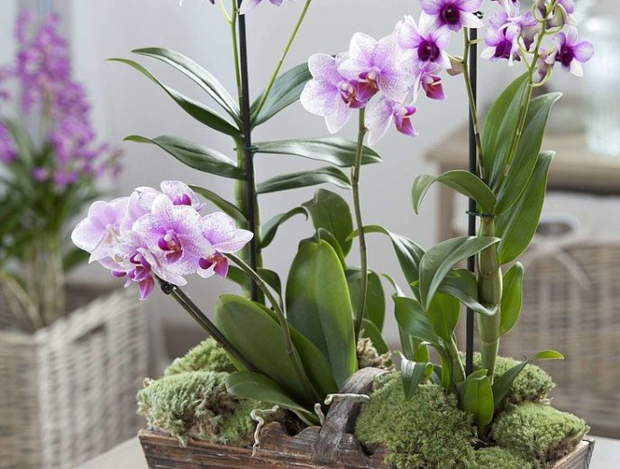

Dendrobium
El Dendrobium es uno de los géneros de orquídeas más diversos, con numerosas especies originarias principalmente de Asia y Oceanía. Se caracteriza por sus tallos alargados y sus hermosas flores, que pueden aparecer en diferentes colores y formas. Es una orquídea muy apreciada por su resistencia y por la abundancia de sus flores.
Características:
- Flores pequeñas o medianas, agrupadas en racimos.
- Colores variados como blanco, rosa, amarillo y morado.
- Tallos largos y delgados que almacenan agua y nutrientes.
- Necesita buena iluminación, preferiblemente indirecta.
- Requiere riego moderado y buena ventilación.
- Algunas especies pueden perder sus hojas durante una etapa de descanso.



